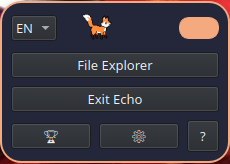
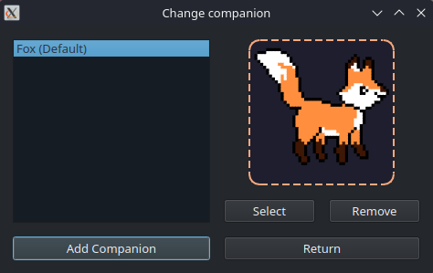

Echo
Echo — compagnon de bureau animé.
Redonnez vie à votre bureau (Windows et Linux) avec Echo, un adorable assistant animé qui se promène sur vos fenêtres, gère vos rappels et s'intègre parfaitement à votre espace de travail sans ralentir votre PC.
Compagnon animé interactif : Des animations fluides (marche, repos, sommeil) avec support de sprites personnalisés.
Explorateur de fichiers intégré : Accédez rapidement à vos dossiers directement depuis l'univers de votre compagnon.
Rappels & calendrier : Ne ratez plus aucun événement important grâce aux alertes personnalisées de votre petit assistant.
Compagnons personnalisables : Changez de mascotte, ajustez l'échelle et adaptez la vitesse selon vos envies.
Licence MIT
Téléchargements directs
Captures d’écran

